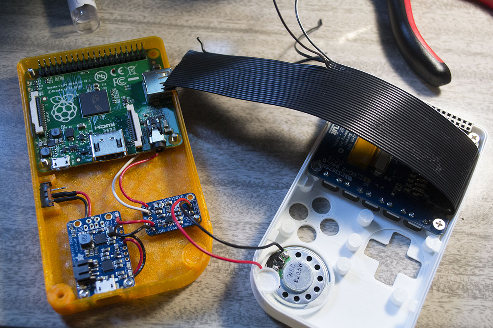
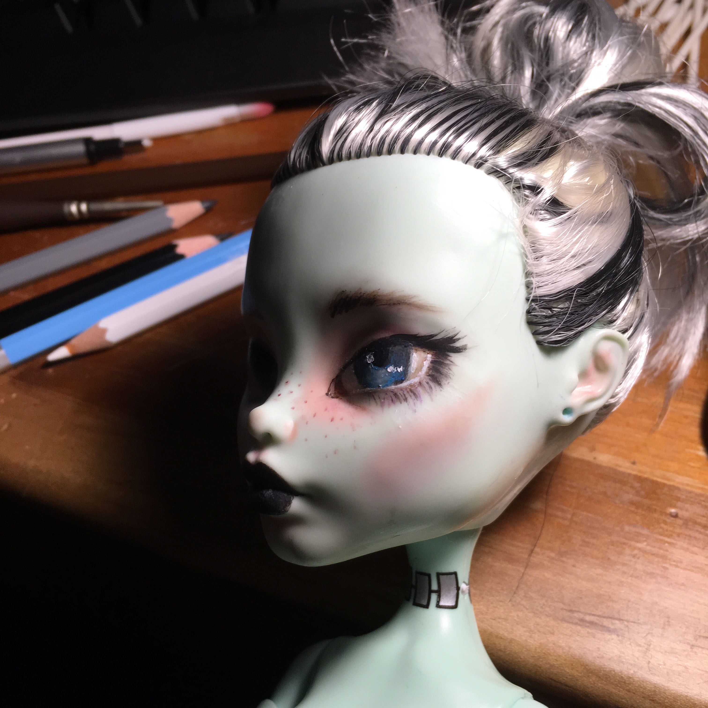

⌄ THAT KIND OF STUFF IS DOWN THERE ⌄
I'm in a big glitch art phase, so that's all that is under this section at the moment.
talk about some stuff related to your research and shit
processing thing
arduino stuff
These are some led projects I made, which are my favorite because bright blinky things just make the world a happier place.
I made a persistance of vision kit from Adafruit and fucked around with it for awhile, which was fun.

I also made a pigrrl from another Adafruit kit. It was fun to build but kind of lackluster to play with so I disassembled it and used the components for other projects.

These are things I've done back end development on
For awhile I was in the circus, and I did contortion. I wasn't very good but I had a few neat tricks I could pull off.
I briefly got really obsessed with doll "face-ups" and wanted to start doing doll repaints myself. I did one repaint, which turned out pretty good, and was then over it.

In 2011 I was invited to participate in a trash fashion show, so I made this fused plastic bag dress and knit this dress out of plastic bag yarn.
For several years, I did some production for the artist
Sheila Klein under her direction. These are a few detail shots of some of her pieces that I had the opportunity to work on that I am particularly fond of.
Artsy makeup
Some funny illustrations I made for other people.
An illustration I made for an old blog, that pretty much sums up my life at the time.
I painted this bird on a tent I made. It's a pitohui, which is a poisonous bird.
Sometimes I design knitting and crochet patterns.
For about 6 months, I designed a bunch of baby sweater patterns. Like a lot, 50+ baby sweaters. It turned out to be sort of a dumb idea, but these are the best ones.
these are things I've done the front end development on
I designed some earrings in Inkscape. I had the pieces laser cut out of wood, and I stained and hand assembled them.
×
My name is Stephanie Mason. I like to try new things and to challenge myself. I am very interested in interdisciplinary work of all kinds. I am especially keen on the intersections between art, science, and design.
I have worked, for various lengths of time, as a research assistant, a web developer, a knitting store associate, a contortionist, an independent designer, a studio assistant, an artist, a teacher, and a house painter. I currently make a living doing bioinformatics research and web development.
I am also a student at Western Washington University, finishing a BS in Biology and Mathematics with minors in Computer Science and Chemistry. I currently have plans on going to graduate school to work towards getting a PhD. I also have a BA in Linguistics.


![an illustration of stephanie riding a bicycle down a road. There is a small grey rooster on her handle bars and yarn trailing out of a basket attached to the back of her bike. There is a fat pigeon holding a banner also attached to her bike with the words 'un petit squab' written on it. She has two dogs following her down the path, and at the end of the path is a tiny house on a trailer with her partner, Jason and a few more chickens next to it. There is text at the bottom of the illustration that reads, 'a blog of creative endeavors.'](images/art-random/illustrated-header.jpg)